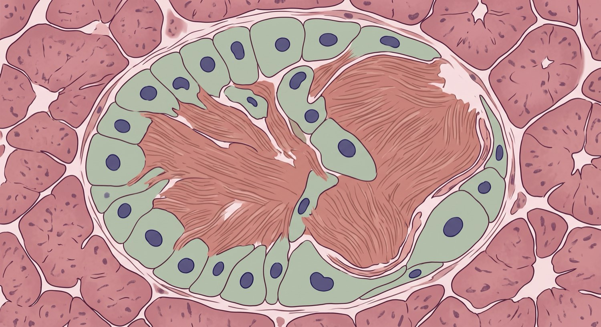

Parte I · Los cinco lugares donde aparece la falla
T1
trinquete 2 de 3 · el amiloide
Una proteína que sale junto con la insulina se deposita entre las células
Qué es el IAPP. El polipéptido amiloide del islote, también llamado amilina. La célula beta lo fabrica y lo libera en el mismo gránulo que la insulina, en proporción fija. Tiene función propia: enlentece el vaciamiento del estómago, frena el glucagón y contribuye a la saciedad.
El mecanismo. Al compensar la resistencia, el islote secreta más insulina y, con ella, más IAPP. Bajo sobrecarga sostenida esa proteína se pliega mal y forma agregados y fibras que no se disuelven.

Qué produce
Destruye las uniones de conexina 36 que quedaban en pie.
Aumenta la distancia capilar, y aísla a la célula de su suministro.
Activa el inflamasoma de los macrófagos del islote.
Por qué no revierte
La fibra insoluble ocupa el espacio físico entre las células. No hay forma de retirarla cambiando el contexto.
Como causa se nombra F3; como restricción que ya no cede, T1 · la imagen es ilustración, no microscopía